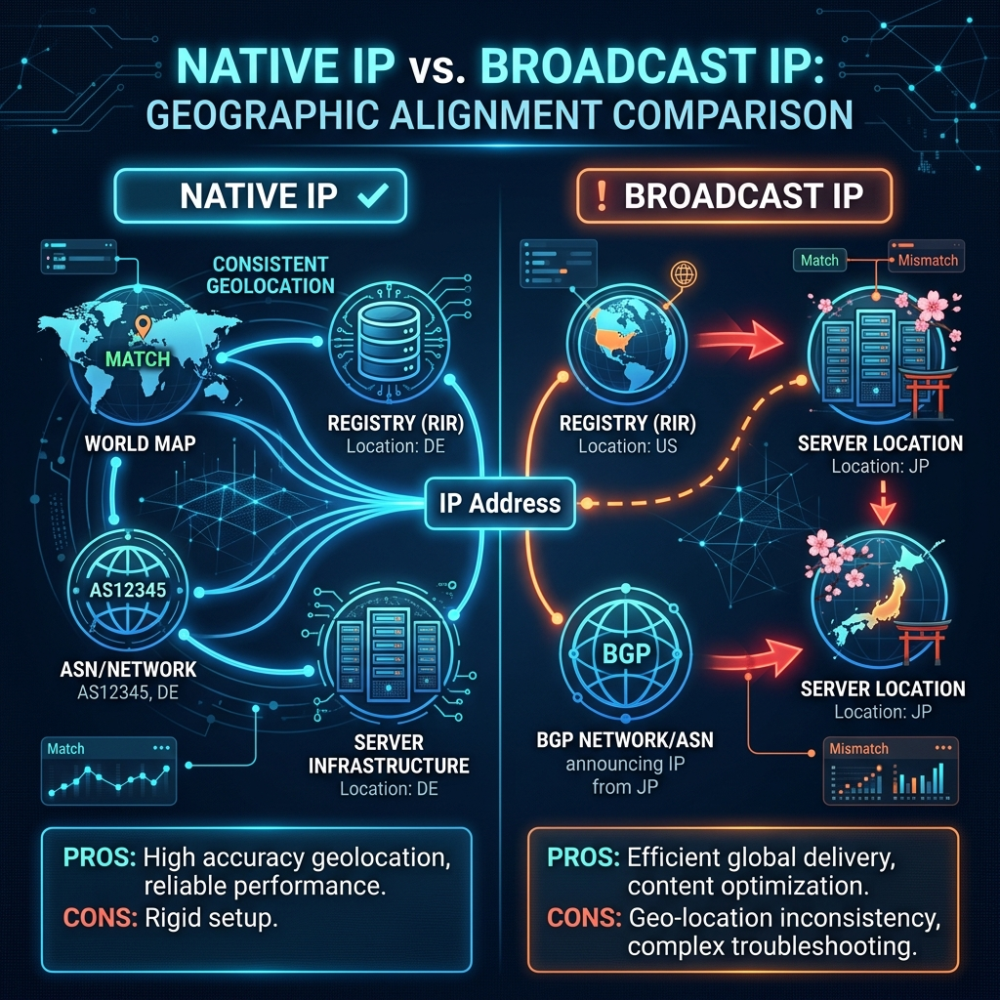
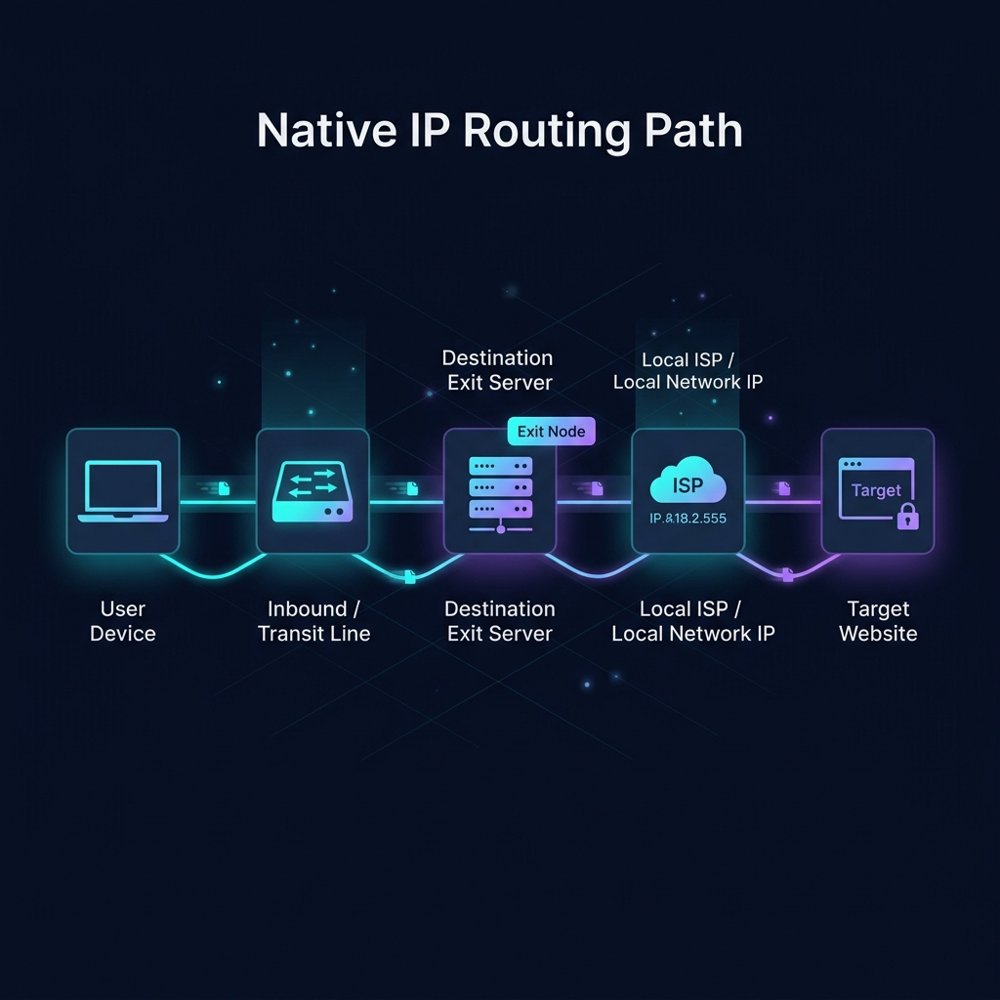
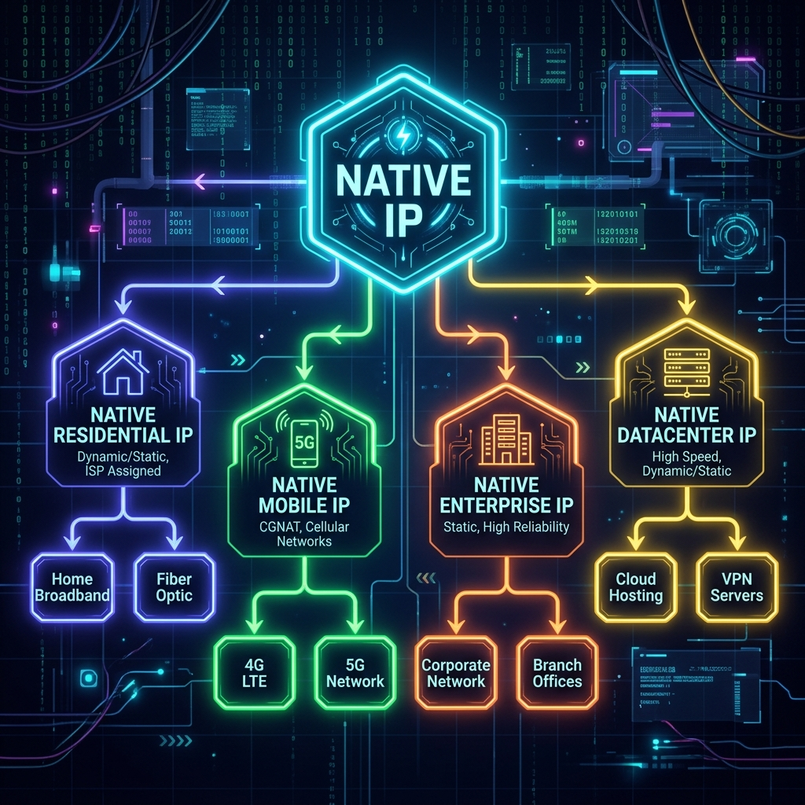
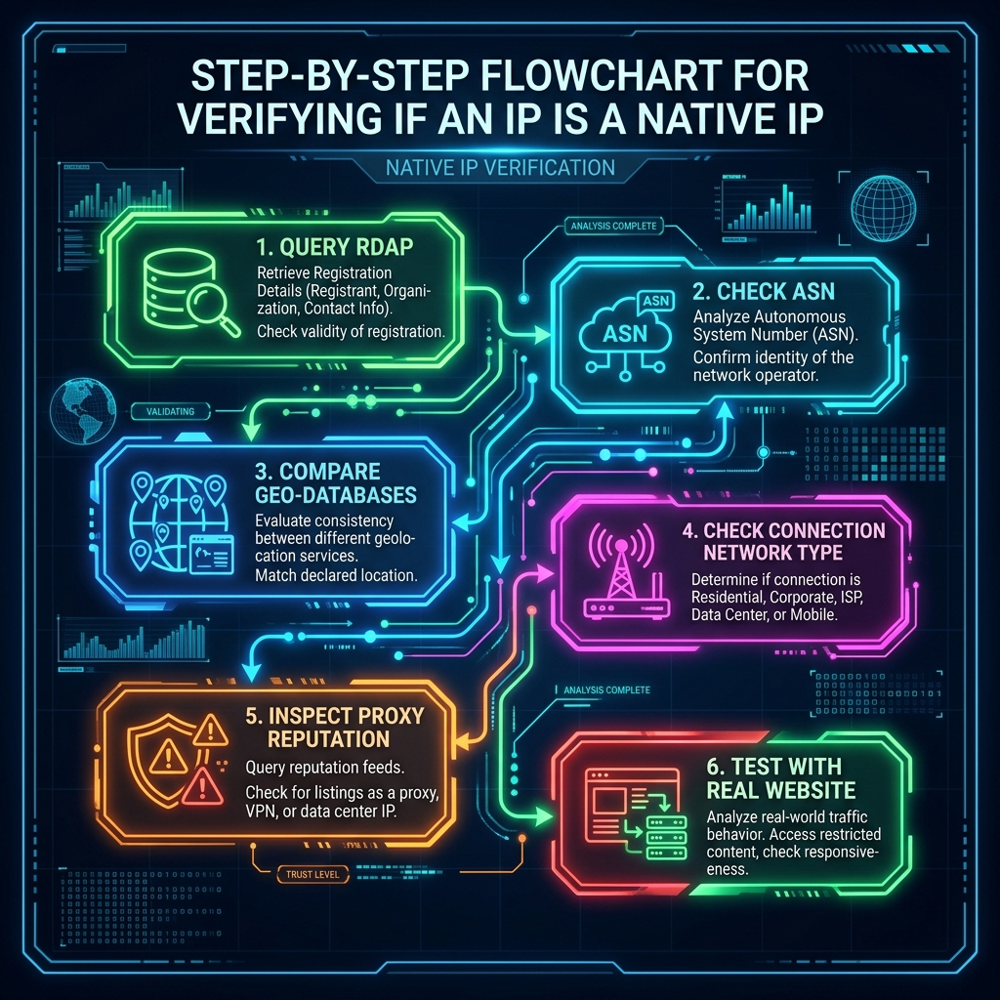

在选购代理中转节点、跨境出海专线以及看剧流媒体解锁服务的介绍中，我们经常能看见诸如“日本原生 IP”、“美国原生节点”、“原生住宅出口”等宣传词汇。但需要首先明确：原生 IP 并不是 IETF（互联网工程任务组）、区域互联网注册机构或运营商统一定义的标准学术术语，而是跨境网络服务市场形成的一个通俗概念。
在多数网络技术应用场景中，原生 IP 通常是指：一个 IP 地址在 WHOIS 数据库的注册登记信息、物理网络上的实际路由出口、所属网络起源的自治系统（ASN）以及主流地理位置定位数据库的定位信息，全部与其服务器实际所在的物理国家或地区完全一致。它所强调的是 IP 身份属性与实际使用地点的高度统一，而不仅仅是服务器硬件放在哪个地方。
一、 IP 地址为什么会有“身份”
在互联网中，公网 IP 地址资源由全球及区域互联网注册体系（如亚太 APNIC、北美 ARIN 等）进行分配。网民可以通过 RDAP 或 WHOIS 协议，公开查询任意公网 IP 段的注册机构、地址范围、所属公司以及绑定的 BGP 自治系统。根据 美国互联网号码注册局 (ARIN) 官方说明，RDAP 能够供人便捷查询 IP 及自治系统号注册数据。但需要注意，WHOIS 的注册信息只证明了该段 IP 归谁管理，并不代表它在物理上一定会绑定在哪台特定的服务器上。

任意一段 IP 地址段，必须由某个自治系统通过边界网关协议（BGP）向全球互联网发布可达路由才能正常运转。根据 RFC 4271 规范 (BGP-4 边界网关协议)，同一段 IP 地址可以在不同的物理地理位置被宣告上网。由于运营商合作、网络地址租赁或路由走向调整，同一段 IP 可以从世界的任何节点发布出来。
因此，判断一个 IP 节点是否满足“原生”属性，通常需要对以下四项指标进行联合评估：
仅看其中任意单独一项，都可能在实际应用中遭遇定位和风控判定错误。
二、 原生 IP 节点通常是什么结构
一个标准的原生 IP 节点的网络连接路径如下所示：

以日本原生节点为例：服务器物理上托管在日本当地数据中心，而该服务器出口所绑定的公网 IP 也是由日本当地的网络运营商或服务商（如 SAKURA Internet）提供，BGP 宣告也从日本本地自治系统发出，且全球主流的第三方 IP 数据库（如 IPinfo、MaxMind）都将该 IP 定位为日本。这样的节点，就是“日本原生 IP 节点”。
不过，“本地网络 IP”并不天然等于住宅宽带。它可能是当地的大型云厂商、托管机房或者商业企业网络。只要它的注册地、路由地和数据库定位高度重合且一致，它就属于原生 IP 的范畴。
💡 核心常识：
原生 IP 绝不等于住宅 IP，住宅 IP 也不代表天然拥有完美信誉，二者属于不同维度的网络概念。
三、 原生 IP 与广播 IP 的区别
在加速线路中，“广播 IP”是指某个 IP 资源段原本登记在 A 地区，但运营商通过 BGP 协议在 B 地区进行了路由广播，使这个地址段实际上被放在了 B 地区的物理服务器上使用。
例如：某段 IP 注册国家显示为美国，但服务器物理架设在日本，且 BGP 起源自治系统在日本。此时，由于不同地理位置数据库的更新有快有慢，在部分数据库中该 IP 会被识别为美国，而在另一部分数据库中它又会被识别为日本。
根据 MaxMind GeoIP 文档 的解释，IP 地理定位无法做到 100% 绝对精确，其定位精度受地区、连接类型、ISP 调整和数据库更新频率的直接限制，且数据通常会自带一个地理“准确半径”。
广播 IP 并非不可使用，如果它的底层物理路由优化良好，上网延迟和速度甚至可以很优秀。但其最大痛点是地理定位冲突。许多流媒体、外贸商铺、AI 平台检测到这种 IP 时，会因为其注册国家与实际路由出口的撕裂，直接触发风控限制或跳转到错误的地区版本。
四、 原生 IP 与住宅 IP 的区别
住宅 IP 专指由当地家庭宽带服务商（如 Comcast、HKBN）分配给个人家庭住宅上网使用的 IP 资源；机房 IP（Hosting/Datacenter IP）则属于云厂商、托管数据中心；移动 IP 则由基站蜂窝移动运营商分配。
原生 IP 强调的是位置属性的一致，而不是网络类型。它们在维度上的归属关系如下表：
| 网络类型 | 常见拥有者 | 主要技术特征 | 与原生 IP 的关系 |
|---|---|---|---|
| 住宅 IP | 家庭宽带运营商 (ISP) | 信誉度最高，在流媒体与风控系统中最受信任 | 若定位和出口与当地一致，即为原生住宅 IP |
| 机房 IP | 云服务商、数据中心 (Hosting) | 带宽资源充足，部署极其方便，但风控门槛高 | 若定位和出口与当地一致，即为原生机房 IP |
| 移动 IP | 蜂窝移动通信商 (Mobile) | IP 随基站切换频繁变动，通常为共享大内网 IP | 若定位和出口与当地一致，即为原生移动 IP |

根据 MaxMind GeoIP 数据库技术参考，风控及定位检测系统会专门读取 IP 的 ISP 和连接类型（Connection Type）数据，区分出 Cellular（蜂窝网）、Cable/DSL（有线宽带）以及 Hosting（托管网络）。
“原生住宅 IP”由于同时具备了“本地国家定位一致”以及“个人宽带 ISP 网络归属”双重属性，通常被视为最干净、信誉等级最高的上网身份，能够完美突破许多封锁。
五、 原生 IP 为什么受到关注
对于需要出海、流媒体看剧的极客来说，原生 IP 的最大作用是降低业务平台对 IP 地理位置的审计冲突。
如果一个 IP 节点的出口、起源 ASN 以及地理定位完美重合，访问海外应用时就能避免以下风控痛点：
- 目标网站或网店（如 Amazon、eBay）频繁弹出验证码甚至触发安全锁定。
- 访问 ChatGPT、Claude 时，因出网 IP 被标记为“代理机房 IP”或“地理归属异常”而限制访问。
- 流媒体平台（如 Netflix、Disney+）提示“检测到正在使用代理/VPN”而隐藏特定版权内容。
然而，仅有“原生IP”并不能在风控面前绝对免予审核。根据 ipinfo.io 代理检测服务文档 介绍，安全防火墙会利用专门的威胁数据库，识别 IP 是否属于公开代理、住宅代理、Tor 节点或托管网络。因此，如果一个原生 IP 节点的 ASN 归属于机房（Hosting），部分敏感平台依然可能对其采取限制。
六、 怎样判断一个节点是不是原生 IP
判断节点的真实属性，建议采用以下标准核验流程：

- 第一步：查询 WHOIS/RDAP 注册信息。 检测 IP 段的资源持有者归属。如果 IP 的注册区域（Country）与您租用节点的物理机房地理区域高度一致，则通过首轮核验。
- 第二步：分析 ASN 与 ISP 属性。 使用网络查询工具，查看 IP 声明所起源的自治系统号（ASN）。检查该 ASN 的组织名称，确认其是本地大型宽带运营商（如 AT&T）还是跨国云计算中心。
- 第三步：多数据库地理定位交叉验证。 同时比对 ipinfo.io、MaxMind、IP2Location 等至少两至三个数据库的查询结果。如果多个权威数据库返回的定位国家和时区 100% 一致，说明地理定位一致性极高。
- 第四步：检测代理标记（Proxy / Hosting）。 检查 IP 属性是否被安全数据库归类为机房托管（Hosting）还是宽带网络，并查看是否携带 Proxy/VPN 历史黑名单风险标签。
- 第五步：真机业务访问测试。 以最终业务平台的判断为准。例如，使用日本节点打开 Google 搜索或流媒体平台，如果默认显示日本当地语言、货币并且能正常解锁本地独占视频，则证明该原生 IP 属性完全有效。
七、 原生 IP 不代表线路更快
IP 原生属性仅用于描述 IP 的网络地理归属身份，与数据传输线路的网络传输质量没有任何直接关系。
代理节点速度、延迟、丢包等硬性指标，主要是由以下网络结构决定的：
- 网络传输线路： 节点数据是否采用企业级国际专线（如 IEPL/IPLC 专线）还是普通公网中转（如 国内中转线路）或直连。
- 物理距离与带宽： 深圳到香港专线的物理距离决定了其 3-5ms 的极限物理延迟；而中转入口的独享带宽大小决定了晚高峰会否限速卡顿（网络慢的详细排查可见 节点高延迟与慢速排查指南）。
- 服务器端负载： 出口节点服务器的 CPU、内存负载，以及同时共享该节点带宽的在线人数。
一个定位纯净的“原生住宅 IP”节点，如果走的是普通直连公网且在高峰期遭遇骨干网拥堵，依然会严重卡顿丢包；而一个地理定位可能稍微存在偏差的“广播 IP”节点，如果跑在独享的 IEPL 专线中转之上，上网依旧会如丝般顺滑。
因此，原生 IP 与 IEPL、IPLC、中转直连是完全独立维度的名词，不应该混为一谈。
八、 常见认识误区
- 误区一：“只要注册地在当地就是原生 IP” 不够准确。很多广播 IP 段的 WHOIS 注册地显示在当地，但 BGP 路由已经在别处发布，且各大地理位置数据库已将其重新定位到实际物理地，这种地址对本地服务来说已经失去了原生性。
- 误区二：“原生 IP 一定是住宅家庭宽带” 完全错误。机房和云厂商（Hosting）的 IP，只要地理一致且没有漂移，也是原生机房 IP。
- 误区三：“住宅 IP 绝对不会被识别为代理或限制” 不准确。根据 IPinfo 关于住宅代理 30 天实测日志 的分析，商业代理厂商会租用家庭用户的宽带用来做住宅代理。这些家庭 IP 一旦在极短时间内发起海量异常请求，风控系统会在数小时内直接将其打上“住宅代理（Residential Proxy）”的标签并予以限制。
- 误区四：“检测出原生 IP 就代表可以解锁所有平台” 不准确。平台的拦截策略除 IP 位置外，还会审计设备指纹、付款卡头、Cookie 历史等多维度信息。
总结
所谓原生 IP 节点，本质上是出口 IP 地址的注册信息、BGP 路由、所属 ASN 以及主流地理定位数据库的判定结果，与服务器真实的部署地区达成了高度一致。
在挑选和测试时，应秉持综合核验的原则，不要轻信商家的口头宣传，可以通过查询 RDAP、起源自治系统 ASN、使用多个地理位置数据库比对等方式，进行多角度鉴别。理清原生 IP 的真实属性，结合 稳定专线机场 以获得高稳定性与纯净出网身份的完美搭配，方能为您跨境出海保驾护航。